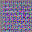
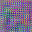
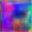
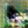
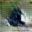
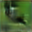
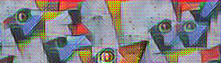
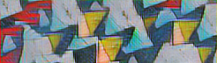

A classifier says what is in the image. Today the network also says where:
a class for every pixel (segmentation) or a box for every object (detection).
classificationone label
semantic segmentationa class per pixel
object detectiona box + class per object
instance segmentationa mask per object
1 · segmentation
down and up again: transposed convolution, U-Net
2 · detection
a variable number of boxes: anchors, NMS, one or two stages
3 · both, and beyond
Mask R-CNN, Segment Anything
Photo: Tracy Lundgren, Pixabay licence. Masks: SAM, one click per fruit (part 3); class names added by us.
Part 1
Semantic segmentation
A class for every pixel
input $H \times W \times 3$, output $H \times W \times C$: class scores for every pixel, softmax over the $C$ classes
loss: cross-entropy, averaged over all pixels
$$L = -\frac{1}{HW}\sum_{i,j} \log p_{ij}(y_{ij})$$
classification of every pixel: all people are one region, the number of people is not part of the answer
labels are expensive: a polygon around every object
one 3×3 layer, 64 → 64 channels, on a 960×640 photo:
$$960\cdot 640\cdot 9\cdot 64\cdot 64 \approx 22.6\ \text{G multiply-adds}$$
more than the whole VGG-16 at 224×224 (15.5 G)
sees too little
each 3×3 layer adds 2 pixels to the receptive field: to see a whole 300-pixel bus, about 150 layers
Idea 3: down, then up again
encoder (downsampling)
a classification network without its dense layers, usually pretrained on ImageNet: cheap, large receptive field, knows what is in the image
decoder (upsampling)
brings the resolution back to $H \times W$. But how do we make an image larger?
Upsampling without parameters
fixed rules, nothing to learn (bilinear interpolation is another one)
max unpooling needs the positions of the maxima from the matching max pooling layer of the encoder (SegNet, 2015)
next: let the network learn how to upsample
Transposed convolution: learnable upsampling
Each input pixel adds a copy of the kernel, scaled by its value; copies are placed $s$ apart and summed where they overlap. The kernel is learned.
$$\mathbf{z} = y_1 \begin{bmatrix} \color{#ff6b6b}{w_1}\\ \color{#5fd38d}{w_2}\\ \color{#5ab0ff}{w_3}\\ 0\\ 0 \end{bmatrix} + y_2 \begin{bmatrix} 0\\ 0\\ \color{#ff6b6b}{w_1}\\ \color{#5fd38d}{w_2}\\ \color{#5ab0ff}{w_3} \end{bmatrix}$$
each input adds a copy of the kernel, scaled by its value and shifted by the stride; $z_3$ gets two copies
read $M^\top$ by rows: gather (view 2)
$$z_3 = \color{#5ab0ff}{w_3}\,y_1 + \color{#5fd38d}{w_2}\cdot 0 + \color{#ff6b6b}{w_1}\,y_2$$
every output is one window of $(0,\, 0,\, y_1,\, 0,\, y_2,\, 0,\, 0)$, $\mathbf{y}$ spread with zeros and padded, times the kernel read backwards $(\color{#5ab0ff}{w_3}, \color{#5fd38d}{w_2}, \color{#ff6b6b}{w_1})$: in 2D, rotated by 180°
$M^\top$ is also the backward pass of the strided convolution ($\partial L / \partial \mathbf{x} = M^\top\, \partial L / \partial \mathbf{y}$), and frameworks implement one with the other. It restores the shape, not the values: $M^\top$ is not $M^{-1}$, so “deconvolution” is a misleading name.
Uneven overlap: checkerboard artifacts
Answer to the question: it depends on the pixel. In both views, and in the rows of $M^\top$, an output pixel gets 1, 2 or 4 inputs. With an input of ones and a kernel of ones the output counts them: a regular pattern.
generated images and segmentation maps show a faint checkerboard (Odena, Dumoulin & Olah, 2016)
fix 1: kernel size divisible by the stride ($k = 4$, $s = 2$): even overlap away from the border
fix 2: resize, then convolve: nearest-neighbour or bilinear upsampling, then a normal 3×3 convolution
Try the buttons: $k$, $s$, and “resize + conv”.
Checkerboards in real networks
untrained generator (random weights)

deconv in the last 2 layers

deconv in the last layer

resize + conv everywhere
trained GAN, the same three variants

last 2 layers

last layer

none

style transfer with transposed convolutions

the same network with resize + conv
The pattern is there before any training: it comes from the architecture (uneven overlap), not from the data. Training rarely removes it fully; resize + conv avoids it.
Figures: Odena, Dumoulin & Olah, “Deconvolution and Checkerboard Artifacts”, Distill 2016, CC BY 2.0.
Part 1, continued
Two architectures: FCN and U‑Net
built from the pieces we already have:
fully convolutional: any input size; a 1×1 conv gives C class scores at every position
down: pooling or stride: cheap, large receptive field, but coarse
up: interpolation, unpooling, or a learned transposed convolution
skip connections (lecture 6): bring the fine detail of early layers to the end
FCN (Long et al., 2015): predict small, upsample
fully convolutional: VGG-16 with the dense layers turned into convolutions; any input size
class scores at 1/32, one upsampling ×32: blobs
the deepest layer knows what, but not exactly where
Left: our DeepLabV3 run, its logits average-pooled to 1/32 and upsampled bilinearly, as an FCN-32s would see it (experiments/segmentation.py).
FCN-32s, 16s, 8s: add the finer layers
FCN-32s: only conv7, ×32
FCN-16s: + pool4, ×16
FCN-8s: + pool3, ×8
add the class scores computed from earlier, finer layers (⊕), then upsample less
the deep layers know what, the shallow layers know where: combine both
FCN-8s: the person, the car and the bus get their outlines back
Panels: our DeepLabV3 logits at 1/32, 1/16 and 1/8 of the input, upsampled bilinearly: an illustration of the output resolution of the three FCNs, not the FCN models themselves (experiments/segmentation.py).
U-Net (Ronneberger, Fischer & Brox, 2015)
encoder: two 3×3 convs, then 2×2 max pool: half the size, double the channels
decoder: transposed conv ×2, concatenate the encoder map of the same size, two 3×3 convs
skip connections at every level bring back the detail lost by pooling
U-Net keeps both feature maps (256 channels each) and the next convolutions learn how to combine them. FCN (the ⊕ on the previous slide) merges later and more simply: it adds two maps of C class scores, pixel by pixel.
U-Net: the default starting point
origin: biomedical microscopy (segmenting cells), with only 30 annotated images and heavy augmentation (elastic deformations); today used for almost any segmentation task (right)
concatenation (not addition, as in FCN): the decoder sees the fine encoder features and its own coarse ones, and learns how to combine them
use a pretrained classification network as the encoder (ResNet, ConvNeXt): the usual first try for any segmentation task
everywhere an image goes in and an image of the same size comes out
medical images: organs, tumours
satellite images: buildings, roads, fields
the denoising network of diffusion and flow-matching models (lecture 5): noisy image in, noise or velocity out, same size
Dilated (atrous) convolution: large receptive field, no downsampling
a 3×3 kernel with gaps: dilation $d$ reads pixels $d$ apart; still 9 weights
dilations 1, 2, 4, 8, … : the receptive field grows exponentially with depth, the resolution stays
DeepLab (Chen et al., 2017): ResNet whose last stages are dilated instead of strided, output at 1/8 instead of 1/32
the DeepLabV3 of our segmentation slides: the last two ResNet stages use dilation 2 and 4 instead of stride 2
Loss and metric
classes are unbalanced
class (our street photo)
pixels
background
75.2%
person
13.0%
bus
7.1%
car
4.7%
Cross-entropy is dominated by the large classes → class weights, or the Dice loss (per class):
$p_i$: predicted probability of the class at pixel $i$, $g_i \in \{0, 1\}$: the label. Probabilities, not 0/1: a smooth function of the weights, so a loss.
intersection over union (IoU)
$$\mathrm{IoU} = \frac{|P \cap G|}{|P \cup G|}$$
$P$: pixels predicted as the class, $G$: labelled as it
mean IoU over classes: the standard metric
for boxes: what counts as a hit in detection (next part)
differentiable? No: $P$ comes from argmax, a step. A small weight change flips no pixel: gradient 0 almost everywhere. IoU is a metric; train on cross-entropy or soft Dice.
Pixel shares: our DeepLabV3 prediction on the street photo, experiments/segmentation.py.
Part 2
Object detection
Detection: a list of boxes
output: a list of (class, score, box); box = 4 numbers, axis-aligned
the number of objects is not known in advance: 0, 1 or 50
COCO: 80 classes, 118 k training images, 860 k labelled boxes
here: Faster R-CNN, people and umbrellas, score ≥ 0.7
dots: the centres of the true boxes; red: cells with several centres
A real street, a 6×4 grid:
one object per cell: here 4 cells hold 2 or 3 centres; all but one are lost
one regressor must produce every shape from scratch: a tall person, a wide car, a bus
True boxes: Faster R-CNN's confident detections (score ≥ 0.9) standing in for annotations, experiments/street_boxes.py.
Idea 2: anchor boxes, start from a guess
the anchors of one position: 3 shapes × 3 sizes, always the same
true box the anchor that learns it the street, zoomed on a person and a car that shared one grid cell
put the same $K$ boxes, the anchors, at many positions (every 32 px here)
each anchor answers only: “is there an object like me, here?” a class out of $C + 1$ (+1: background), and a small correction: 4 offsets
the person and the car, in one cell before, now belong to different anchors: different positions and shapes
the network does not draw boxes from scratch: it nudges a nearby guess
Faster R-CNN (Ren et al., 2015), SSD, RetinaNet, YOLO v2 and later.
Training: which anchor learns which object?
IoU ≥ 0.5 → object: its class + 4 offsets · IoU < 0.4 → background · in between → ignored · every object also gets its best anchor, even below 0.5: otherwise small or thin objects would never be learned
The offsets: the box in the anchor's own units
anchor (green): centre $(x_a, y_a)$, size $w_a \times h_a$; true box (dashed): $(x, y)$, $w \times h$. The targets:
divided by the anchor's size: the same numbers for a small and a large object (the “units matter” slide); targets stay around 0
log of the ratio: $w = w_a e^{t_w}$ is always positive, and ×2 and ×½ are symmetric: $\pm 0.69$
$t = 0$ means “the anchor itself”: an untrained head already outputs a sensible box
at test time, decode: $x = x_a + w_a t_x$, $w = w_a e^{t_w}$; loss: smooth L1 on $t$, only for object anchors
Grid + anchors = a single-stage detector
the head is one more convolution: every position, every anchor, in one pass
YOLO (since 2016), SSD (2016), RetinaNet (2017)
Faster R-CNN on our crowd photo: 214,830 anchors on 5 feature maps; a few dozen people
almost every anchor is easy background: its loss swamps the few objects
focal loss (RetinaNet): down-weight the easy examples
$$\mathrm{FL}(p_t) = -(1-p_t)^{\gamma}\log p_t,\quad \gamma = 2$$
$p_t$ = predicted probability of the true class; $\gamma = 0$ gives cross-entropy
Non-maximum suppression (NMS)
Neighbouring anchors fire for the same object: hundreds of overlapping boxes. Keep one per object:
sort the boxes by score
take the best remaining box: keep it
remove every box of the same class with IoU > threshold (0.5) with it
repeat with the next remaining box
Our crowd photo: 317 boxes with score ≥ 0.5 → 37 after NMS.
Raw output of Faster R-CNN with its own NMS switched off; NMS runs here, in the browser.
Check yourself
In what situation is NMS likely to remove a correct detection?
Answer: when objects overlap
two different people, one partly behind the other: their boxes have a large IoU, NMS treats them as duplicates
our crowd photo: with the threshold 0.3 instead of 0.5, NMS deletes 4 more people (pairs with IoU 0.31 to 0.36)
a higher threshold keeps more duplicates: there is no right value for crowds
remedies: Soft-NMS (lower the score instead of deleting), or detectors without NMS (DETR, at the end)
Try the IoU slider on the previous NMS slide.
A nasty case: crayons
6 crayons side by side, 6 correct boxes; the crayons never touch
at 45° each axis-aligned box is a big, mostly empty square, and the neighbours' squares overlap: IoU 0.72 (two apart: still above 0.5)
NMS at 0.5 keeps 2 of 6 correct crayons; at 0° it keeps all 6 (move the angle slider)
thin, tilted, packed objects: pens, ships in a harbour, cars in a car park seen from above, lines of text
remedies: rotated boxes, masks instead of boxes, detectors without NMS (DETR)
Two-stage detection: first where, then what
stage 1: “is there any object here?”
region proposal network: on every anchor, object or not + 4 offsets. Keep the top 1,000 boxes, no class (300 shown).
stage 2: look closer at each box
person 1.00
car 0.99
background 0.83
crop its features (RoIAlign), then: a class out of $C + 1$ and a refined box. Here 716 of the 1,000 proposals end up “background”.
result, after NMS
38 detections with score ≥ 0.7
Stage 1 is the single-stage detector you know, with 2 classes. Stage 2 spends more computation only on the few promising boxes: slower, often more accurate.
Our run: torchvision Faster R-CNN v2 (COCO) on the street photo, its two stages read out separately, experiments/two_stage.py.
Faster R-CNN (Ren et al., 2015): the architecture
History: R-CNN (2014) ran the CNN on every crop of the image; Fast R-CNN (2015) runs it once and crops the feature map; Faster R-CNN (2015) also makes the proposals with a network.
RoI pooling and RoIAlign: a fixed-size crop of the feature map optional
proposals have different sizes, the head needs a fixed input: split the proposal into a fixed grid of bins and pool each bin
RoI pooling (Fast R-CNN): rounds the box to the feature grid, max over each bin; the rounding shifts the box by up to a feature-map pixel (16 image pixels)
RoIAlign (Mask R-CNN): no rounding; sample a few points per bin (blue) by bilinear interpolation, then average. Matters for masks
FPN (Lin et al., 2017): every size on its own level
one feature map cannot serve all sizes: deep maps are coarse (small objects vanish), shallow maps know little
FPN, a feature pyramid network: upsample the deeper map ×2 and add the shallow one: every level is fine and meaningful
each object is handled by the level that matches its size; the shape of a U-Net, with predictions at every level
level
stride
map
anchor
anchors
P2
4
160×336
32
161,280
P3
8
80×168
64
40,320
P4
16
40×84
128
10,080
P5
32
20×42
256
2,520
P6
64
10×21
512
630
all
214,830
Faster R-CNN on our crowd photo (resized to 1333×629), 3 aspect ratios per position; P6: P5 pooled.
Without anchors: every pixel predicts its box (FCOS, Tian et al., 2019)
every position of the feature map inside an object predicts: the class and the distances to the four sides $(l, t, r, b)$
no anchor sizes or shapes to choose, no matching of anchors to boxes
positions near the edge of an object give poor boxes: a third output, centre-ness, multiplies the score
$$\sqrt{\frac{\min(l, r)}{\max(l, r)}\cdot\frac{\min(t, b)}{\max(t, b)}}$$
still followed by NMS. Related: CornerNet (2018, two corners), CenterNet (2019, a heat map of object centres + the size)
Measuring a detector: average precision (AP)
sort all detections of a class by score; a detection is correct if IoU ≥ 0.5 with a true box not matched yet
lowering the score threshold: recall goes up, precision goes down; AP = area under this curve
mAP: mean over classes. COCO “AP”: also the mean over IoU thresholds 0.5 … 0.95; AP50 uses only 0.5
one number for the whole trade-off; a deployed system still needs one threshold
Schematic precision-recall curve.
Detectors: what to remember
SSDlite, 320×320 input
48 ms
4 detections on our crowd photo
Faster R-CNN v2, ≈1333×629 input
1.8 s
37 detections
Speed costs accuracy, and the input size and the backbone decide most of it: small objects need resolution.
One-stage vs two-stage is no longer the deciding factor: the training recipe matters as much (Faster R-CNN v1 → v2: +10 AP, same backbone), and today's real-time YOLOs are one-stage and as accurate.
Choose by the deployment: real time on a phone, car or drone → a one-stage detector; best accuracy, masks → two-stage or transformer (DETR family).
Our CPU run on the crowd photo (16 threads, score ≥ 0.5), experiments/detection.py; the full table of 7 torchvision detectors is in assets/lecture07/data/detectors.json.
Part 3
Both at once, and beyond
A quick overview, not in depth: more in the Visual Recognition course.
Instance segmentation: Mask R-CNN (He et al., 2017)
Faster R-CNN + a third output per proposal: a mask
detection decides which object, segmentation decides which pixels
RoIAlign was introduced here: masks need pixel-accurate crops
Our run: torchvision Mask R-CNN v2, score ≥ 0.9, experiments/detection.py; the 28×28 mask: the raw output of its mask head, experiments/mask_head.py.
A class not seen in training is not recognized
Mask R-CNN was trained on COCO: 80 classes, apples and bananas but no pears. It never learned what a pear is.
the last layer has one output per class it was trained on (COCO: 80 + background); there is no output for “pear”
the softmax still has to share 1.0: a pear's probability goes to look-alikes (apple, banana) or to background, and then it is not detected at all
The same network, given the true box of each fruit: its softmax (top 3).
A new class needs a new output, labelled data and fine-tuning. Can we separate the objects first, and name them later (or never)?
Our runs: torchvision Mask R-CNN v2 (COCO), detections with score ≥ 0.6 (experiments/detection.py); softmax on the true boxes (experiments/pear_softmax.py).
Segment Anything (Kirillov et al., 2023): click, get a mask
input: the image + a prompt: a click, a box, or a rough mask
output: a mask, no class; works for objects never named in training (the pears)
one click is ambiguous (a stalk, a pear, all the fruit?): SAM returns 3 masks (below, from small to large) and its own estimate of their IoU
click anywhere on the photo: the table, a stalk, the shadow
Our run: SAM ViT-B, precomputed for a 24-px grid of clicks, experiments/sam_points.py.
SAM: a heavy encoder once, a light decoder per click optional
interactive: encode once, then every click costs milliseconds (the decoder even runs in a web browser)
times: our CPU run of the smallest model (ViT-B); the paper's ViT-H is ~7× larger
data: SA-1B, 11 M images, 1.1 B masks, built by a data engine: annotators correct SAM's masks → retrain → SAM proposes masks → … → finally fully automatic
the model labelled most of its own training data
Times: SAM ViT-B on our CPU (16 threads), experiments/sam_points.py.
What else SAM can be asked optional
no prompt: a 32×32 grid of clicks, keep the confident masks: 170 masks (55 s on our CPU)
a box (dashed) → the object inside it
several clicks: + on two pears, − on the apple → one mask for both pears
a click on a pear's stalk (zoomed) → only the stalk (SAM's most confident of its 3 masks, 0.93). A click on the body gives the whole pear: SAM segments parts as well as objects
One model, no classes, no fine-tuning: annotation tools, photo editing (“select subject”), medical and satellite images, robotics. SAM 2 does the same in video: click once, the mask follows the object.
Our runs: SAM ViT-B on CPU, experiments/sam_modes.py.
Open vocabulary: the classes are text optional
Mask R-CNN called the first pear a “banana” (COCO has no pears). Text → boxes (OWLv2) → masks (SAM, the boxes as prompts).
Not just class names: “a man in a floral shirt” picks one person out of the crowd.
The tiny crane in the sky and the hotel sign: no COCO class for either.
each box gets an embedding; the query text gets one from a text encoder; score = their similarity (instead of a softmax over fixed classes)
trained on image–caption pairs from the web (as CLIP) + detection data; a new class = a new sentence, no retraining
Our runs: OWLv2 base/16 (Minderer et al., 2023) + SAM ViT-B on CPU, numbers = OWLv2 scores, experiments/open_vocab.py.
Detection and segmentation today
DETR (Carion et al., 2020)
A transformer outputs a set of 100 (class, box) pairs; training matches them one-to-one with the true boxes (Hungarian matching), extra outputs learn “no object”. No anchors, no NMS. Lectures 9 and 10.
open vocabulary
Detect classes given as text: “pear”, “person with an umbrella” (OWL-ViT 2022, Grounding DINO 2023). The class head compares box features with text embeddings instead of a fixed softmax.
SAM 2 (2024), SAM 3 (2025)
SAM 2: video, a mask is tracked through the frames. SAM 3: concept prompts, “yellow school bus” or an example box, and it finds and segments all instances.
still convnets
Real-time detection on phones, cars and drones: YOLO-style one-stage detectors. Medical segmentation: U-Net variants. Most backbones above: ResNets, ConvNeXts or ViTs.